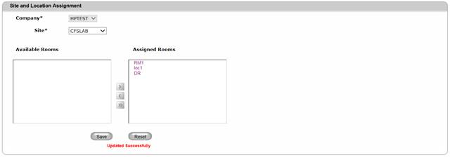

To modify a Site-Location Assignment,
1. Navigate Assignment>>Site and Location assignment on the DCTrackMobileWeb menu bar.
2. On the Site and Location Assignment Screen, specify the Site where you want to see the assignment.
The list of current Available and Assigned locations will be displayed.
3. Edit the current assignment by using the control arrows to assign or de-assign a site. Refer to steps 3 to 5 in Creating Site-Locations Assignment for details.
4. Click Save button to update the database with the changes or click Reset button to refresh page fields.
Upon saving, you will see the successful assignment message.

Figure 115: Site and Location Assignment Screen – Successful Assignment Update
|
Copyright © 2019 Hewlett
Packard Enterprise,v5.2.
|